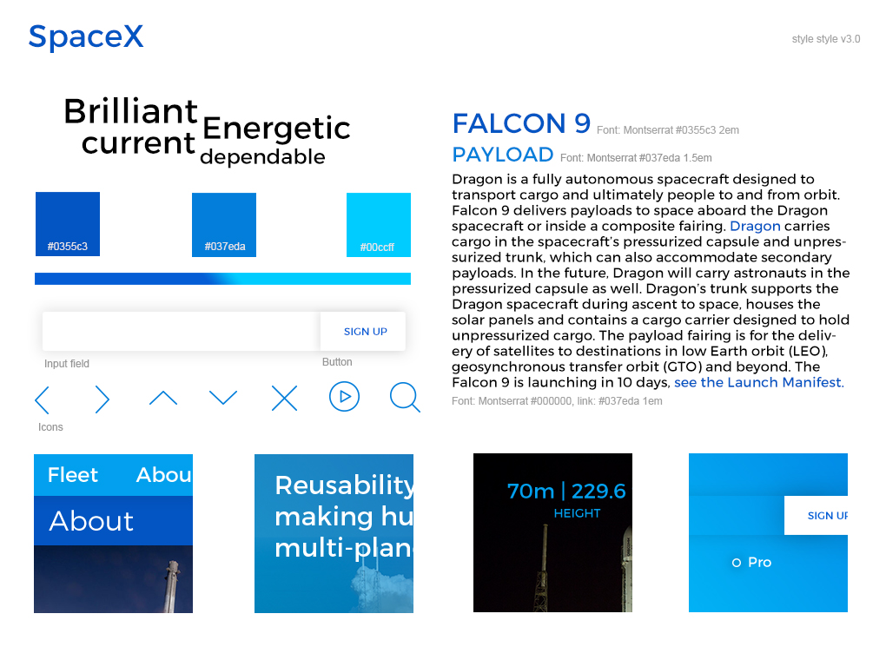
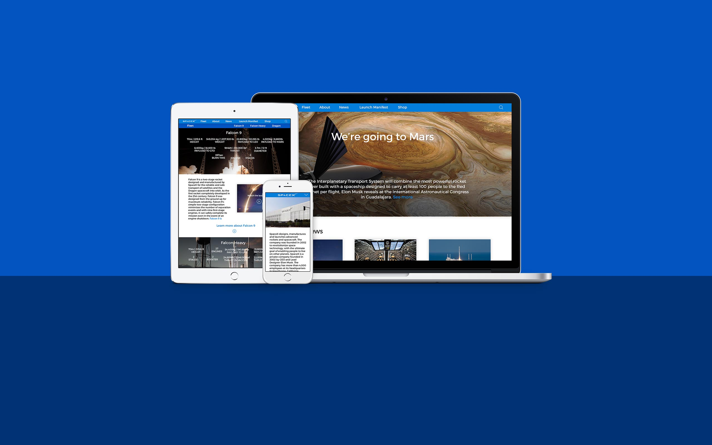

To better serve this new consumer base I designed two personas
Dr. Lena Karim
55 years, Austin TX
Professor of Human Ecology at UT Austin
Jerry Booth
27 years, Atlanta GA
PhD Student at Georgia Tech
Lena is a writer and educator at heart. She reads a blog article on the UCS website and becomes more interested. She then explores the UCS Blog page and decides to donate to their cause. She then explores all the ways she have give to the cause, and decides to make a one time donation.
Jerry is a concerned student, he has just heard about UCS while doing some research. He spends time reading about the UCS involvement with clean energy and then explores more about how UCS works. He then comes across the action center and chooses to support the most important action by filling out the form.
IMAGE
Courtesy: POLITICO
CHANGE THIS TEXT.
INSERT IA GRAPHIC
The Style tiles add to the sketches color, typography and images. It supplies the UI to the UX formed in the sketches.
IMAGE GOES HERE
The website was coded using Zurb Foundations, with special bells and whistles from Xavier Damman (selection sharer), Viljami Salminen (Responsive Nav). It is optimized for viewports 1440px, 768px and 320px wide.
